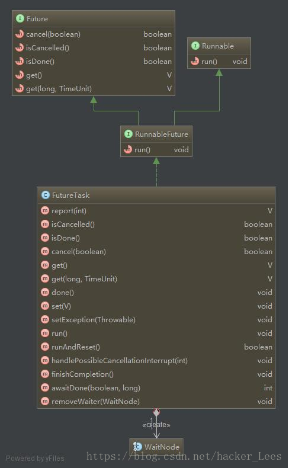

Future表示一个任务的生命周期，并提供了方法来判断是否已经完成或取消，以及获取任务的结果和取消任务等。Future接口：
1 | public interface Future<V> { |
在Future接口中声明了5个方法，下面依次解释每个方法的作用：
- 1.cancel方法用来取消任务，如果取消任务成功则返回true，如果取消任务失败则返回false。参数mayInterruptIfRunning表示是否允许取消正在执行却没有执行完毕的任务，如果设置true，则表示可以取消正在执行过程中的任务。如果任务已经完成，则无论mayInterruptIfRunning为true还是false，此方法肯定返回false，即如果取消已经完成的任务会返回false；如果任务正在执行，若mayInterruptIfRunning设置为true，则返回true，若mayInterruptIfRunning设置为false，则返回false；如果任务还没有执行，则无论mayInterruptIfRunning为true还是false，肯定返回true。
- 2.isCancelled方法表示任务是否被取消成功，如果在任务正常完成前被取消成功，则返回 true。
- 3.isDone方法表示任务是否已经完成，若任务完成，则返回true；
- 4.get()方法用来获取执行结果，这个方法会产生阻塞，会一直等到任务执行完毕才返回；
- 5.get(long timeout, TimeUnit unit)用来获取执行结果，如果在指定时间内，还没获取到结果，就直接返回null。
也就是说实际上Future提供了三种功能：
- 1.判断任务是否完成；
- 2.中断任务；
*3.获取任务执行结果。
Future与Callable的关系与ExecutorService与Executor的关系对应。
Runnable和Callable描述的都是抽象的计算任务。这些任务通常是有生命周期的。Executor执行的任务有4个生命周期阶段：创建、提交、开始和完成。由于有些任务可能要执行很长时间，因此通常希望可以取消这些任务。在Executor框架中，已提交但尚未开始的任务可以取消，对于已经开始执行的任务，只有当它们响应中断时才能取消。
返回结果的任务Callable与Future
Executor框架使用Runnable作为其基本的任务表示形式。Runnable是一种有很大局限的抽象，它不能返回一个值或抛出一个受检查的异常。Runnable接口：
1 | public interface Runnable { |
由于run()方法返回值为void类型，所以在执行完任务之后无法返回任何结果。
许多任务实际上都是存在延迟的计算，对于这些任务，Callable是一种更好的抽象：它会返回一个值，并可能抛出一个异常。Callable接口：
1 | public interface Callable<V> { |
可以看到，这是一个泛型接口，call()函数返回的类型就是传递进来的V类型。
1. FutureTask
Future只是一个接口，无法直接创建对象，因此有了FutureTask。
我们先来看下FutureTask的实现：1
public class FutureTask<V> implements RunnableFuture<V>
FutureTask类实现了RunnableFuture接口：1
2
3public interface RunnableFuture<V> extends Runnable, Future<V> {
void run();
}
RunnableFuture继承了Runnable和Future接口，而FutureTask实现了RunnableFuture接口。
FutureTask的继承关系和方法如图所示：

FutureTask是一个可取消的异步计算，FutureTask 实现了Future的基本方法，提供start cancel 操作，可以查询计算是否已经完成，并且可以获取计算的结果。结果只可以在计算完成之后获取，get方法会阻塞当计算没有完成的时候，一旦计算已经完成， 那么计算就不能再次启动或是取消。
一个FutureTask 可以用来包装一个 Callable 或是一个Runnable对象。因为FurtureTask实现了Runnable方法，所以一个 FutureTask可以提交(submit)给一个Excutor执行(excution). 它同时实现了Callable, 所以也可以作为Future得到Callable的返回值。
FutureTask有两个很重要的属性分别是state和runner， FutureTask之所以支持canacel操作，也是因为这两个属性。
其中state为枚举值：
1 | private volatile int state; // 注意volatile关键字 |
state初始化为NEW。只有在set, setException和cancel方法中state才可以转变为终态。在任务完成期间，state的值可能为COMPLETING或INTERRUPTING。
state有四种可能的状态转换：
- 1.NEW -> COMPLETING -> NORMAL
- 2.NEW -> COMPLETING -> EXCEPTIONAL
- 3.NEW -> CANCELLED
- 4.NEW -> INTERRUPTING -> INTERRUPTED
其他成员变量：
1 | /** The underlying callable; nulled out after running */ |
注：Treiber算法可参见：Lock-Free 算法
下面分析下Task的状态变化，也就一个任务的生命周期：
创建一个FutureTask首先调用构造方法：
1 | public FutureTask(Runnable runnable, V result) { |
此时将state设置为初始态NEW。这里注意Runnable是怎样转换为Callable的，看下this.callable = Executors.callable(runnable, result); 调用Executors.callable:
1 | public static <T> Callable<T> callable(Runnable task, T result) { |
其实就是通过Callable的call方法调用Runnable的run方法，把传入的 T result 作为Callable的返回结果；
当创建完一个Task通常会提交给Executors来执行，当然也可以使用Thread来执行，Thread的start()方法会调用Task的run()方法。看下FutureTask的run()方法的实现：
1 | public void run() { |
首先判断任务的状态，如果任务状态不是new，说明任务状态已经改变（说明他已经走了上面4种可能变化的一种，比如caller调用了cancel，此时状态为Interrupting, 也说明了上面的cancel方法，task没运行时，就interrupt, task得不到运行，总是返回）；
如果状态是new, 判断runner是否为null, 如果为null, 则把当前执行任务的线程赋值给runner，如果runner不为null, 说明已经有线程在执行，返回。此处使用cas来赋值worker thread是保证多个线程同时提交同一个FutureTask时，确保该FutureTask的run只被调用一次， 如果想运行多次，使用runAndReset()方法。
这里
1 | !UNSAFE.compareAndSwapObject(this, runnerOffset, null, Thread.currentThread()) |
使用compareAndSwap能够保证原子性。关于compareAndSwap的相关内容，可参看：http://huangyunbin.iteye.com/blog/1942369
接着开始执行任务，如果要执行的任务不为空，并且state为New就执行，可以看到这里调用了Callable的call方法。如果执行成功则set结果，如果出现异常则setException。最后把runner设为null。
接着看下set方法：
1 | protected void set(V v) { |
如果现在的状态是NEW就把状态设置成COMPLETING，然后设置成NORMAL。这个执行流程的状态变化就是： NEW->COMPLETING->NORMAL。
最后执行finishCompletion()方法：
1 | private void finishCompletion() { |
finishCompletion()会解除所有阻塞的worker thread， 调用done()方法，将成员变量Callable设为null。这里使用了LockSupport类来解除线程阻塞，关于LockSupport，可参见：LockSupport的park和unpark的基本使用,以及对线程中断的响应性
接下来分析FutureTask非常重要的get方法:
public V get() throws InterruptedException, ExecutionException {
int s = state;
if (s <= COMPLETING)
s = awaitDone(false, 0L);
return report(s);
}
首先判断FutureTask的状态是否为完成状态，如果是完成状态，说明已经执行过set或setException方法，返回report(s):
1 | private V report(int s) throws ExecutionException { |
可以看到，如果FutureTask的状态是NORMAL, 即正确执行了set方法，get方法直接返回处理的结果， 如果是取消状态，即执行了setException，则抛出CancellationException异常。
如果get时,FutureTask的状态为未完成状态，则调用awaitDone方法进行阻塞。awaitDone():
1 | private int awaitDone(boolean timed, long nanos) |
awaitDone方法可以看成是不断轮询查看FutureTask的状态。在get阻塞期间：
- 1.如果执行get的线程被中断，则移除
FutureTask的所有阻塞队列中的线程（waiters）,并抛出中断异常； - 2.如果
FutureTask的状态转换为完成状态（正常完成或取消），则返回完成状态； - 3.如果
FutureTask的状态变为COMPLETING, 则说明正在set结果，此时让线程等一等； - 4.如果
FutureTask的状态为初始态NEW，则将当前线程加入到FutureTask的阻塞线程中去； - 5.如果get方法没有设置超时时间，则阻塞当前调用get线程；如果设置了超时时间，则判断是否达到超时时间，如果到达，则移除
FutureTask的所有阻塞列队中的线程，并返回此时FutureTask的状态，如果未到达时间，则在剩下的时间内继续阻塞当前线程。
原文参考：https://blog.csdn.net/codershamo/article/details/51901057
出自：https://blog.csdn.net/hacker_lees/article/details/81296388